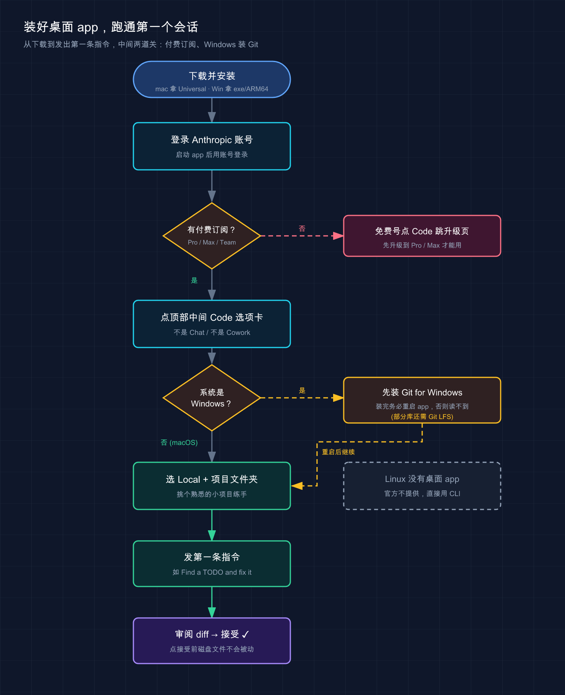

📚 系列导航：上一篇 09 JetBrains 集成 把 Claude Code 装进了 IntelliJ 全家桶。这一篇聊一个很多人忽略的入口——官方桌面 app，一个没有终端、没有 IDE，也能跑 Claude Code 的独立窗口。
都说命令行才是 Claude Code 的「正统玩法」，桌面 app 顶多是给小白的简化版——说句实话，这个判断现在已经过时了。
很多人一开始也是这么想的。可一旦同时改三个互不相干的需求，在终端开三个 tab，改着改着自己就乱了：哪个 tab 在改登录、哪个在重构数据层，切来切去看错好几次。换桌面 app 重试同样的活，左边一栏列着三个会话，每个自动用 Git worktree 隔开，改动互不污染，点一下就切过去——这时候才意识到，这玩意儿不是「简化版 CLI」，它是另一种工作方式。
更关键的是：桌面 app、VS Code 扩展、命令行，跑的是同一个底层引擎，共享同一份 CLAUDE.md 和配置。所以这不是「换个弱化的工具」，而是同一个 Claude Code 换了个更适合并行、更适合可视化审阅的外壳。
什么时候该用它、什么时候老老实实回终端，这篇给你讲清楚。
看完这一篇，你会拿到：
- macOS / Windows 上装好桌面 app 的完整步骤，外加「为什么 Linux 用不了」的明确说明
- 桌面 app 三个独有的爽点：并行会话 + Git 隔离、集成终端 / 文件编辑、可视化 diff 审阅怎么用
- 一张「桌面 app vs 终端 vs IDE 扩展 该用哪个」的对照表，以及一条把终端会话一键搬进桌面的命令
01 先搞清楚：桌面 app 到底是什么
很多人一看到「桌面应用」，第一反应是：那不就是 claude.ai 的客户端、套个壳的聊天框吗？
不是。 先给结论：桌面 app 是带图形界面的完整 Claude Code，专门为「同时跑多个会话」而生。它跟终端里的 claude 跑的是同一个引擎，能直接读写你本地的文件、改代码、跑命令，只是把这些操作搬进了一个有侧边栏、有窗格布局的窗口里。
类比：同一台车，换了套仪表盘。 命令行是赛车里那种纯数字仪表——信息全、反应快，但你得自己看懂每个读数；桌面 app 是家用车的大屏中控——并行任务、改动 diff、应用预览全都摆在面上，一眼能扫完。发动机是同一台，跑出来的结果一模一样，区别只在你坐进去舒不舒服。
这里有个容易混的点：桌面 app 打开后，顶部有三个选项卡，别搞错你要去哪个。
| 选项卡 | 干什么 | 能碰你的文件吗 |
|---|---|---|
| Chat | 普通对话，类似 claude.ai | ❌ 不能 |
| Cowork | Dispatch 和较长的代理任务 | 在云虚拟机里，不碰本地 |
| Code | 交互式编程，直接读写本地文件 | ✅ 能，每步可审阅批准 |
这一篇只讲 Code 选项卡——它才是「桌面版 Claude Code」。Chat 和 Cowork 属于 Claude Desktop 的另外两块功能，跟咱们写代码这条线关系不大。
💡 一句话总结：桌面 app 不是聊天客户端套壳，它是带图形界面的完整 Claude Code，认准 Code 选项卡就对了。
02 装它：三个平台，差别很大
先把最重要的一条放最前面：Linux 没有桌面 app。
这不是漏装了什么，是官方明确不提供——Linux 用户请直接用 CLI（前面第 02 篇讲过怎么装）。所以下面只说 macOS 和 Windows。

这张流程图把从下载到发出第一条指令的整条路径串起来，并标出了两道容易卡住的关：付费订阅（免费号点 Code 会跳升级页）和 Windows 装 Git（装完要重启 app），右下角也顺带提醒了 Linux 没有桌面 app。下面分平台细说每一步。
装之前先确认：你得有付费订阅
这条很多人栽过。桌面 app 的 Code 选项卡要求 Pro、Max、Team 或 Enterprise 订阅，免费账号点进去会直接提示你升级。常见的踩坑场景是：拿免费号点 Code 一直跳升级页，还以为是装坏了——其实是订阅没到位。
macOS
去官方下载页拿 Universal 版（Intel 和 Apple Silicon 通用），下载 .dmg 安装、拖进应用程序文件夹，启动后用 Anthropic 账号登录，点顶部中间的 Code 选项卡。
macOS 一般自带 Git，桌面 app 的并行会话隔离依赖它。不放心的话，在终端跑一句确认：
git --version
预期输出类似（版本号不重要，能打印出来就行）：
git version 2.39.5 (Apple Git-154)
Windows
x64 处理器下载 .exe 安装程序；Windows ARM64 要单独下 ARM64 安装包，别拿错。
Windows 有个 macOS 没有的硬门槛：Code 选项卡的本地会话必须先装 Git for Windows。在一台新装的 Windows 上很容易踩这个坑——没装 Git 就点 Code，弹出一句红色的 Git is required，会话压根起不来。装完 Git 记得重启应用，否则它读不到。
另外 Windows 上有些库还要 Git LFS，碰到 Git LFS is required by this repository but is not installed 这种报错，就去 git-lfs.com 装上、跑一句 git lfs install，再重启应用。
一句重要提醒：桌面 app 自带 Claude Code，不用你单独装 Node.js 或 CLI。但反过来，如果你还想在终端里敲
claude，那个 CLI 得另外装（见第 02 篇）——两者是分开的两份程序，只是共享配置。
💡 一句话总结：Linux 没有、免费号用不了；macOS 拿 Universal 版即装即用，Windows 必须先装 Git 再重启。
03 爽点一：并行会话 + Git 自动隔离
这是桌面 app 最值得用的理由，没有之一。
先说问题：终端并行的痛
你肯定遇到过这种场景：手头三个任务，修个登录 bug、加一组测试、顺手重构一下工具函数。在终端里你只能开三个 tab 各跑一个 claude，但它们改的是同一份工作目录里的文件——A 会话改了 utils.js，B 会话也想动它，两边的改动就会互相打架。
桌面 app 怎么解的
桌面 app 的做法很干净：点侧边栏的 + New session 开一个新会话，如果项目是 Git 仓库，它会自动给这个会话拉一份独立的 Git worktree。
类比：图书馆的独立研究间。 你和另外两个人都在看同一套藏书（同一个仓库），但每人分到一间隔音的研究间（worktree），各看各的、各写各的笔记，互不干扰；等你整理好了（提交），成果才汇回总馆。在你提交之前，一个会话的改动绝不会污染另一个会话。
侧边栏列着你所有会话，Ctrl+Tab / Ctrl+Shift+Tab 在它们之间循环切换（这两个键所有平台都用 Ctrl，不是 Cmd）。想同时看两个会话？macOS 按住 Cmd、Windows 按住 Ctrl 点侧边栏里的另一个会话，它会在旁边分屏打开。
几个实用细节
- worktree 存哪：默认在
<项目根>/.claude/worktrees/。可以在「设置 → Claude Code → Worktree location」改成别的目录。 - 想把
.env这类 gitignore 文件也带进 worktree：在项目根目录建一个.worktreeinclude文件，列出要带的文件（以官方文档为准）。 - 会话用完怎么清：鼠标悬到侧边栏的会话上，点归档图标，对应的 worktree 就删掉了。
- PR 合并后自动归档：在「设置 → Claude Code」打开 Auto-archive after PR merge or close，跑完的本地会话会自己收掉。
一个值得养成的习惯是：一个 PR 配一个会话。改完提交、开 PR、合并，会话自动归档，桌面始终干干净净，不用手动记「哪个 tab 在干嘛」。比起在终端开五六个 tab 自己数，心智负担小太多。
💡 一句话总结：每个会话自动一份 Git worktree，并行改多个需求互不污染——这是桌面 app 相对终端最实在的优势。
04 爽点二：集成终端 + 文件编辑，不用切来切去
桌面 app 的 Code 选项卡是围绕窗格（pane）搭的：聊天、diff、预览、终端、文件、计划、任务……你想怎么摆就怎么摆。拖窗格标题挪位置、拖窗格边缘改大小，跟拼积木似的。
注意：窗格布局、集成终端、文件编辑器这套需要 Claude Desktop v1.2581.0 或更高版本。版本低就先去「Check for Updates」更新（以官方文档为准，版本号可能变化）。
集成终端：和 Claude 共享同一个环境
从 Views 菜单打开终端，或者直接按 Ctrl+`（这个键也是全平台 Ctrl）。
它最妙的一点是：终端开在会话的工作目录里，跟 Claude 共享同一个环境。所以你在这个终端里跑 npm test 或 git status，看到的就是 Claude 正在改的那一份文件，不会出现「Claude 改了但我终端里看的是旧的」这种错位。
这解决了用 VS Code 扩展时的一个老麻烦：以前得自己保证终端 cd 到了对的目录，现在直接省了——它本来就在对的地方。
提醒：集成终端只在本地会话里有，远程会话用不了。
文件编辑器：点路径就能改
点聊天或 diff 里的任意文件路径，文件就在文件窗格里打开了。直接改、点 Save 写回磁盘。
如果你打开文件之后它在磁盘上被改过（比如 Claude 又动了一次），窗格会警告你，让你选覆盖还是丢弃，不会闷头把别人的改动盖掉。
一个细节：HTML、PDF、图片、视频这类路径，点了不是在文件窗格打开，而是去预览窗格——这个下一节细说。文件窗格在本地和 SSH 会话可用；远程会话改文件得直接让 Claude 动手。
顺手记一下：视图模式
聊天记录默认把工具调用折叠成摘要（Normal 模式）。想看 Claude 到底每一步干了啥，按 Ctrl+O 循环切到 Verbose；想只看最终结果和改动，切到 Summary。调试「它为什么这么干」时 Verbose 很有用，并行扫多个会话结果时 Summary 最快。
💡 一句话总结：终端共享工作目录、文件点开即改——该有的开发工具都在一个窗口里，不用满屏切应用。
05 爽点三：可视化 diff 审阅，改对没改对一眼看清
这是图形界面相对纯终端最直观的提升。
终端里 Claude 改完代码，diff 是一片绿加红的文本流；桌面 app 把它变成了能点、能批注、能让 Claude 自审的可视化界面。
diff 怎么看
Claude 改了文件后，会冒出一个 +12 -1 这样的小指示器（加了 12 行、删了 1 行）。点它就打开 diff 查看器：左边一栏列改动的文件，右边显示每个文件具体改了哪儿。
在某一行直接批注
这是整套 diff 审阅里最好用的地方：点 diff 里的任意一行，弹出批注框，输入你的反馈按 Enter。想批注多行就一行行点、一条条写，最后一次性提交所有批注：
- macOS：
Cmd+Enter - Windows：
Ctrl+Enter
Claude 读完你的批注，按要求改，改完又是一份新 diff 给你审。这一来一回，比在终端里打字描述「第 23 行那个变量名改一下」精准太多——你直接戳在那行上说话。
让 Claude 先自审一遍
diff 查看器右上角有个 Review code 按钮。点它，Claude 会在你提交前先把这份改动审一遍，直接在 diff 里留批注，你可以回复或让它改。
注意它审的是高信号问题：编译错误、明显的逻辑 bug、安全漏洞这类。它不挑代码风格、格式、或者 linter 本来就能抓的东西——那些交给 linter 就好。
改完开 PR，CI 还能盯着
开了 PR 之后，会话里会冒出一条 CI 状态栏，Claude Code 用 GitHub CLI 轮询检查结果。两个开关值得知道：
- Auto-fix：CI 挂了，Claude 自动读失败日志、试着修。
- Auto-merge：所有检查通过后自动合并 PR（合并方式是 squash，且需要你在 GitHub 仓库设置里开过 auto-merge）。
前提：PR 监控需要你机器上装好并登录了 GitHub CLI（
gh）。没装的话，第一次开 PR 时桌面 app 会提示你装。
实测下来，逐行批注 + Review code 这套组合，已经能替代大半的「人肉 code review 第一遍」。以前 Claude 改完得逐文件扫一遍找问题，现在让它先自审，只复核它标出来的高信号点，一轮下来省不少眼力。
💡 一句话总结：diff 能点能逐行批注、还能让 Claude 先自审高信号问题，再配 CI 自动修——「改对没改对」从靠眼力变成靠界面。
06 桌面 app vs 终端 vs IDE 扩展：到底用哪个
讲到这你可能更纠结了：手上明明有终端的 claude、有 VS Code 扩展，现在又来个桌面 app，到底该用哪个？
先给一句官方原话定调：
想在一个窗口里管理并行会话、并排摆窗格、可视化审阅改动，用 Desktop；需要脚本、自动化或更喜欢终端工作流，用 CLI。
把三者摊开对比，按「你最在意什么」来选：
| 你最在意…… | 终端 CLI | VS Code / JetBrains 扩展 | 桌面 app |
|---|---|---|---|
| 并行多会话 + Git 隔离 | 手动开 tab、自己管 worktree | 一般 | ✅ 自动 worktree、侧边栏切换 |
| 可视化 diff、逐行批注 | 纯文本 diff | ✅ 内联 diff | ✅ diff + 批注 + 自审 |
| 在熟悉的编辑器里写代码 | ❌ | ✅ 就在你的 IDE 里 | 自带文件编辑器，但不是你的 IDE |
| 脚本 / 自动化 / 无头运行 | ✅ --print、Agent SDK |
部分 | ❌ 仅交互式 |
!bash 快捷键、Tab 补全 |
✅ | 部分 | ❌（终端原生便利没有） |
| 应用预览、CI 监控、计划任务 | 需自己搭 | 部分 | ✅ 原生 UI |
| Linux | ✅ | ✅ | ❌ 不提供 |
| 第三方模型（Bedrock/Vertex/Foundry） | ✅ | ✅ | 默认只连 Anthropic API（企业部署可配 Vertex / 网关） |
看出门道了吗？三者不是替代关系，是各有主场：
- 要脚本化、跑 CI 流水线、用国产 / 第三方模型 → 老老实实用 CLI，桌面 app 干不了这些。
- 主力就在 VS Code / JetBrains 里写码 → 用 IDE 扩展，代码和 AI 在同一个窗口最顺。
- 同时推好几个独立任务、想可视化审阅 → 桌面 app 的主场。
而且它们能同时用、甚至同一个项目同时用——共享 CLAUDE.md、MCP server、hooks、skills、settings.json。一个顺手的搭配是：日常写码在 VS Code 扩展，一旦要并行铺开三四个独立需求就切桌面 app，需要批量自动化才回终端写脚本。
⚠️ 注意：像 /permissions、/config、/agents、/doctor 这种会在终端弹交互面板的命令，在 Code 选项卡里用不了，会回你一句 isn't available in this environment。要改权限规则或配置，直接编辑 settings.json，或回独立 CLI 跑。
💡 一句话总结：CLI 管自动化、IDE 扩展管写码、桌面 app 管并行 + 可视化——三者共享配置、各打各的主场，按当下需求切就行。
07 动手：装好桌面 app，跑通第一个会话
光看不练假把式。下面走一遍从装到跑通第一个会话的最小流程，每步都给你能自验的预期结果。
第一步：装好并打开 Code 选项卡
按第 02 节装好（macOS 拿 Universal 版，Windows 先装 Git）。打开应用、登录，点顶部中间的 Code 选项卡。
✅ 自验：能看到左侧有会话侧边栏、中间是提示框，说明 Code 选项卡正常。若点 Code 跳升级页 → 你是免费账号，得先订阅 Pro/Max。
第二步：选环境 + 项目文件夹
发第一条消息前，提示区要配四样东西：
- 环境：选 Local（在你本机跑、直接读写文件）。另有 Remote（云端）和 SSH（你自己的远程机器），先用 Local 最简单。
- 项目文件夹：点 Select folder，挑一个你熟的小项目——别拿祖传大仓库练手。
- 模型：发送按钮旁的下拉菜单选，Opus / Sonnet / Haiku 都行，会话中途能换。
- 权限模式：保持默认的 「询问权限」（
default），新手最稳。
第三步：发第一条指令
提示框里输入一个具体的小任务，比如官方给的示例：
找一条 TODO 注释，把它修掉
或者：
给这个代码库创建一个 CLAUDE.md，写上项目说明
按 Enter 发送。
第四步：审阅并接受改动
因为是「询问权限」模式，Claude 不会直接改文件，它会先给你一份 diff。你会看到：
- 一份 diff 视图，显示每个文件具体要改哪儿
- 接受 / 拒绝按钮
- Claude 处理时的实时进度
✅ 预期结果：你点接受之前，磁盘上的文件不会被动。这就是「询问权限」模式的安全感——看清楚再点头。拒绝的话，Claude 会问你想怎么改。
第五步（可选）：把终端会话搬进桌面
如果你之前在终端 claude 里聊到一半想换到桌面 app，不用重开。在终端会话里敲：
/desktop
Claude 会保存当前会话、在桌面 app 里打开它，然后退出 CLI。
注意：
/desktop仅 macOS / Windows 可用，且只在你用 Claude 订阅登录时能用——API key 登录、或 Bedrock / Vertex / Foundry 部署都不支持（以官方文档为准）。
08 小结
这一篇把 Claude Code 的第三个入口——桌面 app——讲清楚了，核心就这几条：
- 它是带图形界面的完整 Claude Code，不是聊天套壳：跟终端同一个引擎、共享 CLAUDE.md 和配置，认准 Code 选项卡。
- 装它三个平台差很大：Linux 没有；免费号用不了（要 Pro/Max 起）；Windows 必须先装 Git 再重启。
- 三个独有爽点：并行会话 + Git worktree 自动隔离、集成终端 / 文件编辑共享同一环境、可视化 diff 能逐行批注还能让 Claude 自审。
- 三者各打主场：自动化用 CLI、写码用 IDE 扩展、并行 + 可视化用桌面 app，能同时用。
你现在应该能：在 macOS / Windows 上独立装好桌面 app、开多个并行会话且明白它们靠 worktree 隔离、用可视化 diff 审阅并批注 Claude 的改动、并清楚什么时候该切回终端。把并行这套跑顺，同时推几个需求就不再手忙脚乱了。
下一篇 11 网页版与云端（Web / 手机）——桌面 app 里那个 Remote 环境、还有手机上能瞄进度的能力，到底是怎么回事？我们会看看不开电脑、甚至人不在工位时，怎么让 Claude Code 在云端接着替你干活。